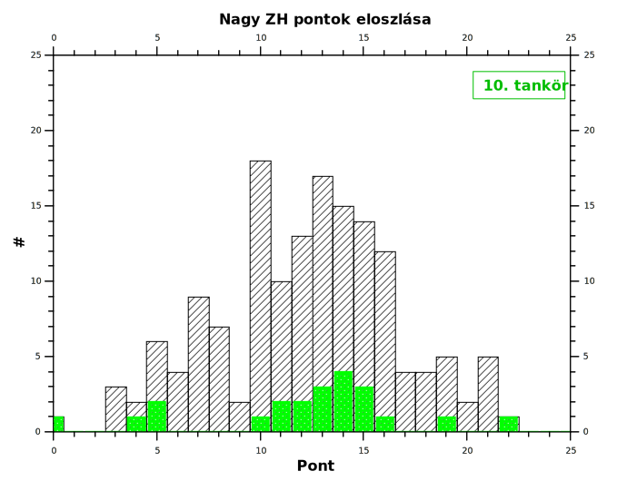

Megprobalom ide írni a lényeges (ill. néha csak kapcsolódó) információkat:
Gyakorlat téridő koordinátái: páratlan heteken, kedden 1415-1600; E401
A gyakorlatok tervezett anyaga és a házi feladatok letölthetők (.pdf -ben) innen (.doc -ban pedig innen)
| Név | 1. gyak | 2. gyak | 3. gyak | 4. gyak | 5. gyak | 6. gyak | 7. gyak | ∑ kis ZH | Aláírás |
|---|---|---|---|---|---|---|---|---|---|
| Balázsi Eszter | + | 3 | 2 | 2 | 5 | 0 | 5 | 17 | ✔ |
| Cseresnyés Péter | + | 2.5 | 3 | 5 | 2.5 | 3.5 | 1 | 17.5 | ✔ |
| Dudola Dóra Antónia | + | 2.5 | 4 | 0.5 | 5 | 4.5 | 5 | 21.5 | ✔ |
| Ferenczi Tímea | + | 0.5 | 5 | 2 | 2 | 4 | 3 | 14.75 | ✔ |
| Fülöp Krisztián | + | 2.25 | 3.5 | 3.25 | - | 1 | 2 | 12 | ✘ |
| Herczeg Dániel | + | 2 | 3 | 5 | 4 | 4.5 | - | 18.5 | ✔ |
| Jászai Henrietta | + | 1 | 4 | - | - | 3 | - | 8 | ✘ |
| Kiss Dávid | + | 1.5 | 2 | 4.75 | 4 | 2 | 5 | 19.25 | ✔ |
| Komlós Tamás | + | 1.5 | 4 | 5 | 2.5 | 3 | 5 | 21 | ✔ |
| Kovács Márk | + | 1.5 | 5 | 4.5 | 5 | 3.5 | 5 | 24.5 | ✔ |
| Laczkó Tibor | + | 1 | 4 | 0.25 | 1 | 0 | 5 | 11.25 | ✘ |
| Menyhárt Balázs | + | 0.5 | 1 | 0 | 2 | 3 | - | 6.5 | ✘ |
| Mikó Róbert | + | 0.25 | 1 | 0.25 | - | - | - | 1.5 | ✘ |
| Nagy Balázs | + | 2.5 | 3 | 1.5 | 5 | 4.5 | 5 | 21.5 | ✔ |
| Németh Noel | + | 2.5 | 0.75 | 4.5 | 5 | 5 | 5 | 22.75 | ✔ |
| Papp Dávid | + | 3 | 4 | 5 | 5 | 3.5 | - | 20.5 | ✔ |
| Polgárdi Péter | + | 0.25 | 2 | 0.75 | 0.5 | 3 | 2 | 8.5 | ✘ |
| Ritecz Tamás Dániel | + | 2 | 1 | 2 | 1 | 3.5 | 2 | 11.5 | ✘ |
| Schwarcz Gergely Péter | + | 3 | 3.5 | 4 | 5 | 4.5 | - | 20 | ✔ |
| Tóth Attila | + | 4 | 2.5 | 2 | 2.5 | 4.5 | - | 15.5 | ✔ |
| Végső Tamás | + | 2.5 | 2 | 5 | 5 | 5 | - | 19.5 | ✔ |
| Vógel Ákos | + | 2 | 2 | 0.25 | 2 | 4.5 | 5 | 15.75 | ✔ |
| Zelei Kristóf | + | 3 | 2.75 | 1.25 | 2 | 3 | 5 | 17 | ✔ |
Táblázatban használt jelölések:
"+"/"-"-megjelent / nem jelent meg a gyakorlatonEgyenlőra amit mindenképpen meg szeretnék említani, és egyben ajánlok, az a következő link. Itt egy sor érdekes, és jól manipulálható Applet található, melyek szerintem nagyon hasznosak az anyag megértését tekintve.

Ha bármi hibás vagy önellentmondó információt találtok, kérlek jelezzétek.
E-mail címem: josikvantum@gmail.com
konczer.j@gmail.com